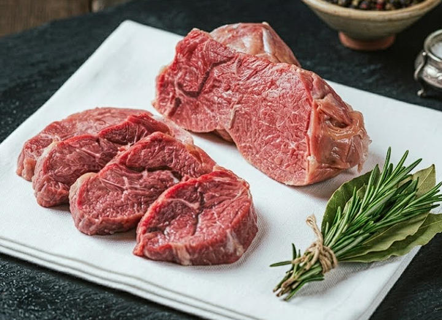

Moisture management
STPP can support the protein system’s interaction with water, helping processors investigate cook-loss and retained-moisture consistency.
Application case 01 Meat & Poultry Processing
How sodium tripolyphosphate can support moisture management, texture consistency and emulsion stability—and how processors can evaluate it responsibly in a real production system.

Quick answer
Food grade sodium tripolyphosphate (STPP, INS 451(i)) is used in permitted processed-meat and poultry formulations to influence ionic conditions and protein functionality. This can support moisture management, texture, emulsion stability and process consistency. Performance is formulation-specific, so the processor should validate the ingredient with its own raw material, equipment, thermal process and destination-market rules.
01 · Case context
A meat or poultry processor may need more consistent moisture behavior and texture across variable raw materials while maintaining a stable, repeatable process. STPP is one ingredient option to investigate when phosphates are permitted in the product category and sales market.
Scope note: This page explains an application pathway, not a universal formulation or dosage recommendation. Legal limits and labeling differ by country and food category.
02 · Functional role
The useful question is not simply “Does STPP work?” but “Which function does this formulation need, and can the process deliver it consistently?” Four connected mechanisms are commonly evaluated.
STPP can support the protein system’s interaction with water, helping processors investigate cook-loss and retained-moisture consistency.
Changes in ionic conditions can influence functional proteins involved in binding, structure and the finished product’s bite.
In emulsified systems, phosphate selection may contribute to a more stable protein, fat and water matrix when the process is well controlled.
Sequestration can help manage certain metal-ion interactions, although it does not replace appropriate raw-material and oxidation controls.
03 · Evaluation plan
Record the current process and choose measurable outputs such as brine stability, pickup consistency, cook loss, texture, purge and sensory acceptance.
Compare a control with selected phosphate options. Keep raw material, salt, water, temperature and mechanical treatment controlled so the comparison is meaningful.
Evaluate dissolution, addition order, brine temperature, mixing or tumbling time, hold conditions and thermal processing using production-relevant equipment.
Check the total phosphate contribution, label declaration and local rules, then verify quality measures over repeated production batches.
Swipe or use the keyboard to read all columns
| Stage | What to observe | Why it matters |
|---|---|---|
| Brine preparation | Dissolution, clarity, temperature and order of addition | Confirms the ingredient is incorporated consistently |
| Processing | Pickup, mixing behavior, product temperature and hold time | Connects formulation performance with plant conditions |
| Thermal step | Cook loss and process repeatability | Tests moisture behavior under the actual heat process |
| Finished product | Texture, purge, sliceability, appearance and sensory quality | Confirms that technical changes support the product brief |
04 · Quality and sourcing
Confirm the chemical name, INS designation, CAS number, grade, appearance and agreed analytical specification.
Align the certificate of analysis with the purchase specification and define traceability and document-retention expectations.
Request the certificates and declarations required by your quality team, customer standards and destination market.
Agree on bag type, net weight, pallet use, container loading, shelf life, storage and destination port before shipment.
Review the current product page for specification parameters, packaging and quotation information.
Open STPP product page05 · Evidence and related decisions
USDA FSIS identifies moisture retention and flavor protection as functions of phosphates in permitted meat and poultry products. Published meat research also shows why salt, phosphate type, raw material and process conditions must be considered together. These sources support the evaluation framework; they do not establish one formula for every product.
Official US context for phosphate function and ingredient declaration in meat and poultry.
Use the live database to check the additive, INS number and exact food category.
A controlled study illustrating that STPP response changes with sodium chloride and the meat system.
Compare phosphate systems for meat and poultry, or review straight phosphates versus blends.
Interpretation rule: pickup is not retained yield. Compare standardized drainage, cook loss, purge, texture and repeat-lot variation before approving a process.
06 · Frequently asked questions
In permitted formulations, STPP can support moisture management, protein functionality, texture consistency, emulsion stability and metal-ion sequestration. The outcome depends on the complete formulation and process.
No. Permitted phosphate types, food categories, maximum levels and labeling requirements vary. Confirm the current rules for both the manufacturing location and sales market.
The suitable addition method depends on the production system. Dissolution order, temperature, mixing or tumbling conditions and contact time should be evaluated through controlled trials.
Straight STPP offers a defined single-ingredient option. A blend may suit a process that needs a tailored balance of solubility, buffering and functionality. Test both against the same product targets.
Typical requests include a specification, certificate of analysis, safety data sheet, quality or food-safety certificates, relevant declarations, packaging details and traceability information.
At a glance
Share the application, required standard, annual volume, packaging and destination for a focused technical and commercial review.
Technical & commercial enquiry
For a useful response, include the product application, required food standard, quantity, packaging, destination port and any documents your quality team needs.